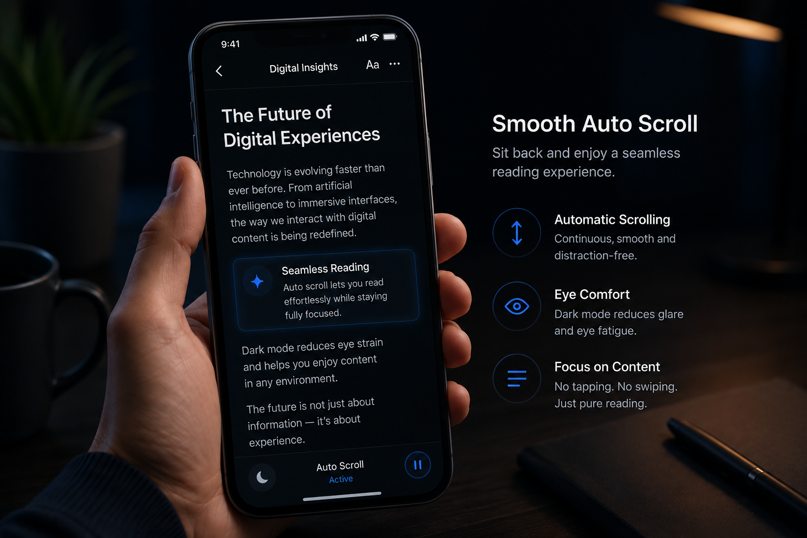
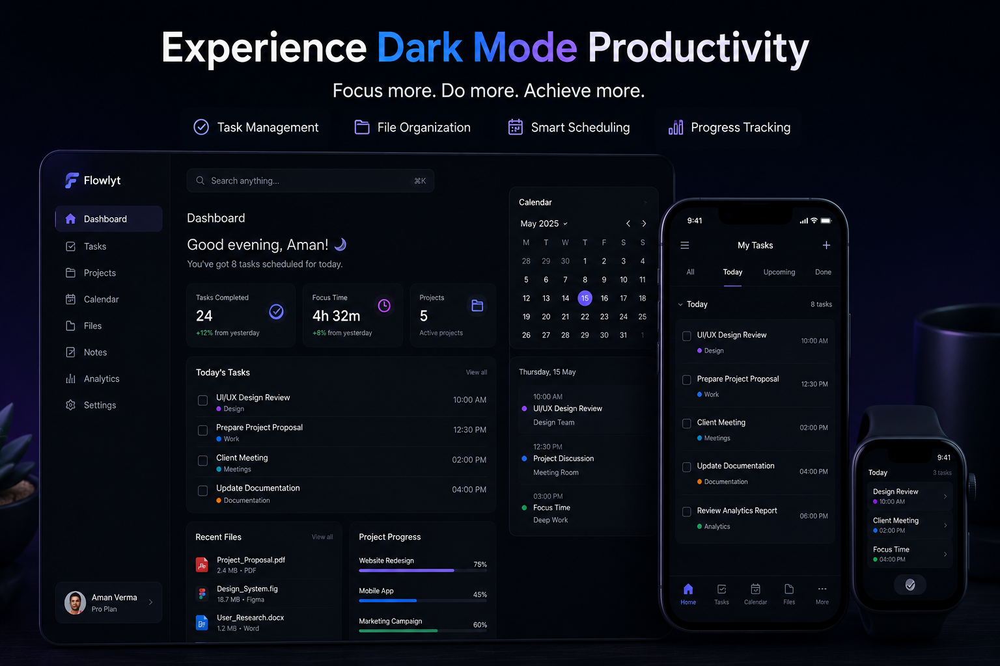

Why Dark Mode Matters — Complete Guide to Better Eye Comfort and Modern UI Experience
Reduce eye strain, save battery, and improve your focus. Discover why dark mode is the future of productivity tools and digital interfaces.

Introduction: Why Dark Mode Has Become a Global UI Standard
Over the last few years, dark mode has become one of the most widely adopted interface features across apps, websites, and operating systems. From mobile phones to productivity tools, users are increasingly switching from bright white screens to darker interfaces.
The reason is simple:
People spend long hours on screens, and bright interfaces cause visual strain.
For example:
- Students reading documents at night
- Professionals working long hours on laptops
- Mobile users browsing in low-light environments
- Designers and developers working extended sessions
In all these cases, dark mode improves comfort, readability, and focus.
That is why modern platforms like JKM Edit Home are integrating user-friendly UI options such as dark mode for a better overall experience.
What Is Dark Mode?
Dark mode is a visual design theme where the interface background is dark (usually black or deep gray), and text/icons are displayed in lighter colors.
Example:
- Light Mode → White background + black text
- Dark Mode → Black background + white/gray text
Modern systems also use:
- reduced brightness UI
- soft contrast colors
- eye-friendly palettes
Dark mode is not just a design trend—it is a massive usability improvement.
Common Problems Without Dark Mode
1. Eye Strain
Bright screens emit intense light that can cause:
- eye fatigue
- dryness
- headaches
- discomfort during long usage
2. Night Usage Difficulty
Using bright interfaces in dark environments:
- disturbs eye comfort
- feels too harsh and blinding
- heavily affects the reading experience
3. Battery Drain (OLED Devices)
Light mode consumes significantly more power on modern OLED and AMOLED screens compared to dark themes, draining battery faster.
4. Reduced Focus
A highly bright UI can feel visually overwhelming during long reading or heavy document work sessions.
Why Dark Mode Is Important
Better Eye Comfort
Dark mode drastically reduces glare and helps users read text for longer periods without visual strain.
Improved Night Experience
It is the ideal setup for:
- late-night work
- low-light environments
- mobile usage in absolute darkness
Battery Efficiency
On supported devices, dark mode helps conserve battery life by simply turning off the black pixels.
Modern UI Standard
Most modern applications, operating systems, and web tools now include dark mode as a default accessibility option.
Why People Prefer Dark Mode Interfaces
Users choose dark mode over traditional bright themes because it provides:
- smoother visual experience
- reduced brightness stress
- modern aesthetic
- better focus on content
- less visual distraction
This is especially useful for productivity platforms and document editing tools where prolonged focus is necessary.
How JKM Edit Uses Dark Mode for Better Experience
1. Clean and Modern Interface
JKM Edit is designed with a simple, distraction-free layout that supports user comfort naturally.
2. Eye-Friendly Reading Experience
Users working with:
- PDF tools
- documents
- editing tools
benefit heavily from reduced eye strain during long working sessions.
3. Better Focus on Content
A dark-themed UI helps users focus directly on their tools and documents rather than bright, distracting interface elements.
4. Consistent Design Across Tools
Whether you are using:
- PDF tools
- image tools
- utility tools
the experience remains smooth, comfortable, and consistent.
5. Mobile-Friendly Dark Experience
The comfortable interface works seamlessly on:
- Android
- iPhone
- tablets
- desktops
Ready for a Better Viewing Experience?
Stop blinding yourself with bright screens. Experience our smooth and modern document tools with a comfortable interface.
Explore Dark Mode Features
Step-by-Step Guide: How Dark Mode Improves User Experience in JKM Edit
Step 1 — Open JKM Edit Platform
Visit the main portal: 👉 JKM Edit Home.
Step 2 — Access Any Tool
Select from a variety of tools:
- PDF tools
- Image tools
- Conversion tools
Step 3 — Switch to Comfortable Viewing Environment
Users can seamlessly work in a darker, cleaner interface depending on their system settings or integrated theme support.
Step 4 — Use Tools Comfortably
Now users can securely:
- upload files
- edit documents
- convert files
- manage PDFs
with significantly reduced visual strain.
Real-Life Use Cases of Dark Mode
Students
- reading notes at night
- studying long PDFs
- completing assignment work without fatigue
Professionals
- report reading
- document editing
- handling long working hours comfortably
Developers and Designers
- UI/UX work
- coding environments
- frequent use of design tools
Mobile Users
- night browsing
- low-light usage
- travel reading
Benefits of Dark Mode in Productivity Tools
| Feature | Light Mode | Dark Mode |
|---|---|---|
| Eye Comfort | Low | High |
| Night Usage | Poor | Excellent |
| Battery Saving | Low | Better |
| Focus | Moderate | High |
| Modern Look | Standard | Premium |
Privacy and Comfort in UI Design
While dark mode is mainly a visual feature, it contributes indirectly to better focus, reduced fatigue, longer usage sessions, and improved workflow efficiency.
JKM Edit prioritizes a clean, secure, and user-friendly interface for all users while maintaining strict document privacy.
Why Fast and Clean UI Matters
Modern users expect minimal design, absolutely no clutter, fast navigation, and an overall smooth experience. Dark mode supports this by reducing visual noise and improving content clarity.
Mobile Usage and Dark Mode Growth
Most users today use smartphones for document viewing, file conversion, and accessing online tools. Dark mode heavily improves readability, comfort, and battery performance on mobile devices.
Best Practices for Using Dark Mode
- Adjust screen brightness manually if needed to suit your environment
- Use dark mode predominantly in low-light environments
- Combine dark mode with "night shift" or blue-light filters for maximum comfort
- Avoid excessive contrast fatigue by taking short screen breaks
Future of Dark Mode in Web Tools
Future digital interfaces will likely include adaptive themes (auto-switching based on time), AI-based brightness adjustments, context-aware UI modes, and highly personalized viewing experiences. Dark mode will remain a permanent, core design standard.
Frequently Asked Questions (FAQs)
Dark mode is a visual design theme where the interface background is dark (usually black or deep gray), and text and icons are displayed in lighter colors to reduce glare.
Yes, on devices with OLED or AMOLED screens, dark mode consumes significantly less power because black pixels are essentially turned off, extending battery life.
Yes, especially in low-light environments. Dark mode reduces overall screen brightness and glare, which helps prevent eye fatigue, dryness, and strain during long reading sessions.
JKM Edit features tools that respect your system's dark theme preferences or provide dedicated dark mode reading options to ensure a comfortable viewing environment directly in your browser.
Absolutely. Dark mode is fully supported on mobile browsers for both Android and iPhone devices, providing a seamless and battery-efficient experience on the go.
Final Thoughts
Dark mode is no longer just a visual preference—it is a fundamental usability necessity for modern digital users. It improves comfort, heavily reduces eye strain, and enhances overall productivity during extended workflow sessions.
Platforms like JKM Edit are evolving toward cleaner, more user-friendly experiences that support long working sessions and better focus.
By combining simplicity, speed, and modern UI design, JKM Edit Home ensures a smoother, more comfortable experience for every user across all digital tools.

Protect Your Eyes & Work Faster
Start using productivity tools designed with your comfort in mind. Switch your workflow to modern, strain-free environments.
Try Dark Mode Tools Now